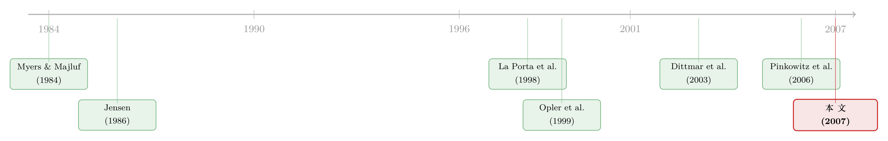

现金握在谁手里，决定了它值多少钱
本文读的是 Kalcheva & Lins (2007, Review of Financial Studies)：当一个国家对小股东的法律保护很弱时，控股管理者手里的现金越多，公司价值反而越低——在这些地方，外部投资者只把每一块「藏在公司里的钱」算作 $0.39；而一旦管理者愿意把钱以股息形式吐出来，折价就被显著抹平。这是第一份系统性地证明「代理问题 × 高现金 = 低估值」的跨国证据。
1 一笔说不清是好是坏的钱
先讲一个让公司金融研究者尴尬了很多年的事实。
教科书会告诉你，公司账上的现金有两副面孔。一副是天使的脸：当外部融资昂贵、信息不对称严重时，手里有现金的公司不会因为「缺钱」而错过好项目，于是现金能帮你躲开投资不足 (underinvestment)，这是 Myers (1984) 与 Myers and Majluf (1984) 的逻辑。另一副是魔鬼的脸：现金是管理者最容易支配、最不需要向谁解释的资源，于是它也最容易被拿去做净现值为负的项目、买下不该买的公司，甚至干脆被「拿走」——这正是 Easterbrook (1984) 和 Jensen (1986) 念兹在兹的自由现金流代理成本 (agency cost of free cash flow)。
关于现金「必须还出去」这条主线，本博客此前细读过 Jensen 的原典，可参见《现金为什么一定要「还」出去？——四十年后，重读 Jensen 的自由现金流》。本文可以看作是给那篇理论的一次大样本国际体检。
天使的那一面，实证早就找到了证据：当投资不足的成本很高时，现金确实值钱（Harford (1999)、Opler et al. (1999)、Mikkelson and Partch (2003)、Almeida et al. (2004)）。可魔鬼那一面呢？这就是让人尴尬的地方了——用美国数据，研究者几乎找不到「治理差 + 现金多 → 估值低」的横截面证据。Harford (1999)、Opler et al. (1999) 都没发现代理成本代理变量对现金持有有什么了不起的影响；Mikkelson and Partch (2003) 甚至发现高现金公司之间的经营绩效差异，跟代理成本无关。
理论言之凿凿，数据却一片沉默。这就是 Kalcheva 和 Lins 这篇文章要解的谜。
2 为什么把目光投向美国之外
接着，一个自然的问题是：是理论错了，还是我们找错了地方？
作者给出的答案是后者。一个很可能的解释是，美国的外部治理环境本身就足够强——强到投资者根本不必去系统性地折价一家「治理糟糕、现金又多」的公司，因为法律、市场、舆论已经替他们把管理者的手按住了。换句话说，在美国，魔鬼那一面被外部环境压住了，所以你在横截面里看不到它。
那要看到它，就得去外部治理「压不住魔鬼」的地方。于是作者把整个分析搬到了美国之外——去利用各国之间在外部股东保护 (external shareholder protection) 上巨大的差异。这个变量应该会同时放大持有现金的成本与收益：保护越弱，管理者攫取 (expropriation) 小股东的能力越强（La Porta et al. (2002)、Claessens et al. (2002)、Lins (2003)、Lemmon and Lins (2003)）。
由此，作者把那两副面孔写成了三条可以检验的假设：
- H1：管理者越「壕沟化」(entrenched)，持有的现金越多——尤其当国家层面股东保护差时；
- H2：壕沟化管理者 + 高现金 → 公司价值越低——尤其当股东保护差时；
- H3：当壕沟化管理者愿意派息时，公司价值反而更高——尤其当股东保护差时（股息能减少过度投资，这一点 Easterbrook (1984)、Jensen (1986)、La Porta et al. (2000)、Faccio et al. (2001) 都论证过）。
注意 H3 是整篇文章里最巧妙的一步：它不只是说「坏」，还指出了「解药」。我们后面会回到这里。
3 识别策略：把「管理者全控」量出来
但真正关键的一步，在于怎么把「管理者壕沟化」这件抽象的事，变成一个可以放进回归的数字。
作者用的是控制权 (control rights) 数据，而不是更常见的现金流权 (cash flow rights)。他们从三套权威的所有权-控制权数据库里拿到管理者/家族通过金字塔结构等方式直接加间接持有的控制权：西欧来自 Faccio and Lang (2002)，新兴市场来自 Lins (2003)，日本来自 Claessens et al. (2000)。在此基础上构造了三个壕沟化度量，层层加严：
- Mgmt control：管理层及其家族持有的控制权百分比。它隐含假设「有效控制」随控制权线性增长——这是最粗的一把尺子。
- Mgmt LBH：一个虚拟变量，当管理层及家族是公司控制权的最大股东 (largest blockholder) 时取 1。它的好处是考虑了「别人手里有多少票」——你不必绝对控股，只要票比任何对手多，就能压过他们。
- Mgmt 20GTAll：更严苛的虚拟变量，当管理层控制权既超过其余所有大股东之和、又超过 20 个百分点时取 1。这里 20 个百分点的门槛来自 La Porta et al. (1999)，背后是 Maury and Pajuste (2005) 的洞见——多个大股东会互相制衡，所以管理者需要的不只是「象征性」的一点控制权。
作者很坦诚地承认：这三个度量衡量的是攫取的能力 (capability)，而不是攫取的动机 (incentive)。动机要靠现金流权来刻画，而那个数据他们拿不到。但他们论证说这未必致命——因为控制权的效应是非线性的：持股 51% 几乎必然带来无可争议的控制，而有效控制在低得多的持股下就能发生。于是被管理者「实际全控」的公司，天然就在控制权与现金流权之间裂开一道「楔子」(wedge)，进一步的分离只是二阶效应。
国家层面，作者用 La Porta et al. (1998) 的反董事权利 (Antidirector Rights) 作为股东保护代理（文中称 SH Rights，取值 0 到 5，越高越保护小股东），并控制 Levine et al. (2000) 提出、Dittmar et al. (2003) 验证过的私人信贷/GDP 比率 (Private credit)，把「资本市场发达程度」从「股东保护」里剥出来。
计量上，作者用的是国家随机效应 (country random effects) 模型——这是个有讲究的选择。固定效应会把所有国家层面的变量（包括 SH Rights 本身）一起吸收掉，那就没法检验「保护强弱如何调节现金的价值」了。随机效应保留了这种跨国交互的可能，代价是要假设国家层面的遗漏变量不与解释变量系统相关。作者用 Hausman 检验来背书这个假设——通过该检验，意味着遗漏的国家层面变量没有系统性地扭曲估计。
概念上，价值回归的核心就是把托宾 Q (Tobin's Q) 对一组交互项回归：
$$ Q_i = \alpha + \beta_1\,(\text{Cash} \times \text{Mgmt})_i + \beta_2\,(\text{Cash} \times \text{Mgmt} \times \text{Poor SH})_i + \gamma' X_i + \varepsilon_i $$
作者预期 \(\beta_2 < 0\)：在保护差的国家，「现金 × 管理者壕沟化」这个组合应当拖低公司价值。这就是整篇文章要打的靶心。
4 数据
- 样本：5102 家非金融公司，来自 31 个国家。金融变量取自
Worldscope数据库、对齐到最接近 1996 年 12 月 31 日的年末（与所有权数据的时点匹配）。 - 观测单位：公司（横截面）。
- 关键变量：
Cash/a= 现金及短期投资 / 净资产（净资产 = 总资产 − 现金及短期投资）；Divdum= 当年是否派息的虚拟变量；Tobin's Q= (股权市值 − 股权账面 + 总资产) / 总资产。所有财务变量在 1% 和 99% 分位 winsorize。 - 样本画像（见 Table 1）：
Mgmt control平均 25 个百分点，其余所有大股东合计平均 13 个百分点；管理层/家族是最大股东的公司占 54%（Mgmt LBH），满足最严门槛的占 33%（Mgmt 20GTAll）。Cash/a均值 0.12，最低是阿根廷的 0.04，最高是挪威和日本的 0.16。Tobin's Q均值 1.50，离散度很大——这种离散恰恰提醒我们，国家层面的会计差异可能污染估计，所以才需要那套随机效应 + Hausman 检验。65% 的公司派息，与 La Porta et al. (2000) 一致；样本以大公司为主，平均总资产超过 17 亿美元。
5 主要结果：一块钱缩水成三毛九
然后，结果就开始一层层揭开了。
先看现金持有（Table 2）。 用最粗的 Mgmt control 时——什么都没有：管理控制权与现金持有之间没有显著关系（Model 1），即便加上它与 SH Rights 的交互（Model 2），交互项依然不显著。如果故事到此为止，那不过是重复了美国那个令人沮丧的「沉默」。
但换用 Mgmt LBH 时，结果截然不同（Models 3、4）：当管理者控制的票数多于任何其他大股东时，现金持有显著更高。这正印证了 H1——重点不是管理者持股「多少」，而是他有没有「压过所有对手」的那种全控地位。控制变量的方向也都符合直觉且在所有模型中稳健：CF/a（盈利能力）和 Sgr1yr（销售增长）正向推高现金，D/a、Capex/a、NWC/a 负向，而 Divdum 与现金持有无关；国家层面，SH Rights 系数为负但不显著，Private credit 显著为正——与 Dittmar et al. (2003) 一致。
真正的反转在价值回归里。 这是全文最锋利的一个数字：
在股东保护差的国家，平均而言，公司内部多持有的「一块钱」对外部股东的边际价值只有
$0.76；而如果这家公司的管理者恰好是最大股东，这一块钱被进一步折价到$0.39。
读一遍这个对比：同样是账上的一美元，在治理糟糕的环境里本来就只值七毛六；一旦掌钱的是一个无人能制衡的管理者，它在小股东眼里立刻缩水成三毛九。这就是「代理问题 × 高现金 → 低估值」第一次被干净地量出来。而且，作者特别强调：只有当国家层面治理足够强时，投资者才平均地按面值（约一块钱）给现金定价——哪怕公司内部治理很差、管理者很壕沟化也无妨。这恰好解释了为什么美国数据里那个魔鬼始终现不了形：美国的外部环境，正是那个「足够强」的情形。
最后是股息这味解药（H3）。 作者发现，在股东保护差的国家，当壕沟化管理者愿意派息时，公司价值显著更高。这与 Pinkowitz et al. (2006) 同期的发现一致——他们也报告说，股息与公司价值的关系在投资者保护更强的国家里反而更弱。逻辑是相通的：在监督失灵的地方，派息是一种可信的「自缚」，等于管理者主动把那块容易被滥用的钱从手里拿走，于是市场愿意为这份克制重新加价。
6 文献脉络
把这条线索拉直来看，它其实是两条大河的交汇。
一条河是自由现金流的代理理论：Jensen (1986) 立下「现金在坏管理者手里是负资产」的论断，Easterbrook (1984) 早一步指出股息能约束管理者，二者共同构成了「魔鬼那一面」。与之对峙的是 Myers (1984) 和 Myers and Majluf (1984) 的融资优序逻辑，那是「天使那一面」。
另一条河是 La Porta、Lopez-de-Silanes、Shleifer、Vishny（合称 LLSV）开创的法与金融：La Porta et al. (1998) 的「Law and Finance」给了我们 Antidirector Rights 这把量国家治理的尺子，La Porta et al. (2000) 又把它接到了股息政策上。

现金持有的实证河道里，Opler et al. (1999) 是奠基之作，但他们（连同 Harford (1999)）在美国找不到代理成本的影子。把现金搬到国际舞台的，是 Dittmar et al. (2003)——他们发现高现金与差的国家层面保护相关，却没能在公司层面抓到代理问题，原因之一是他们的公司层面代理变量太「粗」（一个来自 La Porta et al. (1999) 的家族控股国别度量），而且他们没做估值分析。与本文同期的 Pinkowitz et al. (2006) 证明了「保护差的国家，一块流动资产远不值一块钱」，但他们没看公司层面的治理。
本文站的，恰恰是这个空位：第一个同时把公司层面与国家层面的预期代理问题，接到现金「价值」上的研究。它把 Jensen 的理论、LLSV 的尺子、和现金持有的实证三条线，在一张跨 31 国的横截面上拧成了一股。
7 评论与延伸（Q&A + 研究方向）
(a) 几个可能的疑问
Q：用控制权而不是现金流权，会不会量错了「代理问题」？
会有偏差，但方向多半是保守的。作者坦承控制权只刻画攫取的「能力」而非「动机」，动机需要现金流权。但控制权效应是非线性的——51% 持股就近乎绝对控制，远低的持股就能有效控制，所以「实际全控」的公司天然存在控制权-现金流权楔子，再细分是二阶效应。真正的风险是：能力强不等于真的在攫取，于是
Mgmt LBH可能把一些「能攫取但没攫取」的好管理者也算了进来，这会稀释而非夸大结果。
Q：Mgmt control（连续）什么都测不出，Mgmt LBH（是否最大股东）却很显著——这是稳健，还是挑出来的结果？
作者的解释是经济学上的，而非数据挖掘：连续度量假设控制随持股线性增长，忽略了「别人手里有多少票」。
Mgmt LBH抓的是「能压过所有对手」的离散跳变，这与有效控制的非线性本质更吻合。但坦白说，三个度量给出方向不完全一致这件事，确实提醒读者：结论对「如何定义壕沟化」是敏感的。
Q：$0.76 和 $0.39 这两个数，是因果吗？
严格说不是。这是横截面随机效应回归里的边际价值估计，识别靠的是「Hausman 检验通过 → 国家层面遗漏变量不系统性偏误」。它能排除可观测的国别会计差异和一批公司层面控制变量，但挡不住「治理差的国家恰好还有别的、与现金价值相关的未观测特征」。把它读作「强相关 + 与理论预测方向一致」，比读作「干净因果」更稳妥。
Q：为什么用国家随机效应，而不是更稳的国家固定效应？
因为固定效应会把
SH Rights这种国家层面变量整个吸收掉，而它恰恰是作者要做交互的核心变量——用了固定效应，整篇文章的假设就没法检验了。随机效应是为了保留跨国交互而付出的代价，Hausman 检验是为这个代价买的保险。
Q：股息能抹平折价，是不是意味着「逼公司派息」就能解决治理问题？
文章支持「派息减少过度投资」，但要小心政策含义。派息是管理者自愿的可信承诺，市场为这份自愿克制加价；强制派息未必传递同样的信号，还可能逼出真正缺钱的好公司去外部融资。在融资本就受限的弱保护国家，这个副作用可能不小。
Q：那「现金对受约束公司有益」（天使那一面）在国际样本里去哪了？
作者明确检验过、也明确报告了：在股东保护差的国家，他们没有找到持有现金存在相对收益的证据。也就是说，在这些地方，管理者代理成本盖过了缓解投资不足的好处——魔鬼赢了天使。
(b) 几个可能的研究问题与提案
1. 把「现金的价值」搬到公司债/信用市场。 - 【经济故事】本文测的是现金对股东的边际价值。但对债权人来说，壕沟化管理者手里的现金是另一回事：它既是偿债缓冲（利好），又是可被攫取的资源（利空）。在弱保护国家，控股管理者的现金对信用利差的净效应是正是负？ - 【可行性】中。需要把本文的所有权-控制权数据匹配到国际公司债二级市场利差（如 ICE/TRACE 之外的跨国债券数据库）。识别难在债券样本对弱保护国家覆盖稀疏，且评级内生。
2. 外资持有人能否替代「弱外部治理」？ - 【经济故事】如果一家弱保护国家的公司被大量外国机构持有，外资是否会施加额外监督，从而把现金的折价拉回面值？这正是本文「外部治理强则现金按面值定价」逻辑的延伸。（关于外资究竟是监督者还是「蝗虫」，可参见《外资真是「蝗虫」吗？——一次跨 30 国的长期投资体检》。） - 【可行性】高。外资持股数据（如 FactSet/Worldscope 机构持股）可得，可用 MSCI 可投资度变动等作为外生冲击做 DiD，识别相对干净。
3. 危机当口，弱保护国家的「坏现金」会怎样重新定价？ - 【经济故事】本文是 1996 年的横截面静态图。一旦危机来临、攫取动机骤增（Lemmon and Lins (2003) 的东亚危机正是此意），壕沟化管理者手里的现金折价是放大还是收敛？现金在危机里既是救命缓冲，又是攫取诱惑。 - 【可行性】中。需要事件窗口内的高频估值数据 + 控制权数据，识别可借危机的外生性，但要处理幸存者偏差。
4. 股息之外，还有哪些「可信自缚」能抹平折价？ - 【经济故事】H3 说派息能解药。那么交叉上市到强保护市场、发行国际银团贷款、引入国际审计师（Mitton (2002)、Doidge et al. (2004)、Harvey et al. (2004)）是否同样能压缩现金折价？这是把「绑住管理者的手」的工具箱补全。 - 【可行性】高。这些公司层面治理变量在文献里都有现成度量，可直接加进本文的价值回归做增量检验。
8 我的判断
这篇文章最大的贡献，是它干净利落地解开了一个尴尬了很多年的谜：理论说现金的代理成本应该被定价，美国数据却始终沉默。作者的回答——「不是理论错了，是美国的外部治理太强，把魔鬼按住了」——既优雅又可证伪，而 $0.76 缩到 $0.39 这个对比，是少有的把抽象代理成本翻译成「一块钱值几毛」的实证瞬间。H3 那味股息解药，更让整个故事从「诊断」走到了「药方」。
要说对识别的担忧，我有三点。其一，全文是 1996 年的单期横截面，所有「因果」都靠随机效应 + Hausman 撑着，挡不住「弱保护国家恰好还有别的未观测特征同时影响现金价值」这一类内生性——作者自己在稳健性一节也承认找不到合适工具变量、放弃了联立方程。其二，三个壕沟化度量给出的结论并不齐整（连续度量全军覆没，只有离散的 Mgmt LBH 显著），这让结论对「壕沟化怎么定义」有些敏感。其三，用控制权代理动机，终究隔了一层。
后续我最想看到的，是时间维度和外生冲击：把这套逻辑放进一次治理改革或一场危机里去，看现金折价怎样随外部环境的松紧而呼吸；以及把「外部治理」从「国家法律」拓展到「谁在持股」——尤其是外资机构能否成为弱法律环境下的私人监督者。后者，正好落在公司债、外资持有人与流动性这条我一直在追的线上。
参考文献
- Almeida, H., M. Campello, and M. S. Weisbach (2004). The Cash Flow Sensitivity of Cash. The Journal of Finance 59, 1777–1804.
- Claessens, S., S. Djankov, and L. H. P. Lang (2000). The Separation of Ownership and Control in East Asian Corporations. Journal of Financial Economics 58, 81–112.
- Claessens, S., S. Djankov, J. P. H. Fan, and L. H. P. Lang (2002). Disentangling the Incentive and Entrenchment Effects of Large Shareholders. The Journal of Finance 57, 2741–2771.
- Dittmar, A., and J. Mahrt-Smith (2007). Corporate Governance and the Value of Cash Holdings. Journal of Financial Economics 83, 599–634.
- Dittmar, A., J. Mahrt-Smith, and H. Servaes (2003). International Corporate Governance and Corporate Cash Holdings. Journal of Financial and Quantitative Analysis 38, 111–133.
- Easterbrook, F. (1984). Two Agency-Cost Explanations of Dividends. The American Economic Review 74, 650–659.
- Faccio, M., and L. H. P. Lang (2002). The Ultimate Ownership of Western European Corporations. Journal of Financial Economics 65, 365–395.
- Faccio, M., L. H. P. Lang, and L. Young (2001). Dividends and Expropriation. The American Economic Review 91, 54–78.
- Harford, J. (1999). Corporate Cash Reserves and Acquisitions. The Journal of Finance 54, 1969–1997.
- Jensen, M. C. (1986). Agency Cost of Free Cash Flow, Corporate Finance and Takeovers. The American Economic Review 76, 323–329.
- La Porta, R., F. Lopez-de-Silanes, A. Shleifer, and R. W. Vishny (1998). Law and Finance. The Journal of Political Economy 106, 1113–1155.
- La Porta, R., F. Lopez-de-Silanes, A. Shleifer, and R. W. Vishny (1999). Corporate Ownership Around the World. The Journal of Finance 54, 471–517.
- La Porta, R., F. Lopez-de-Silanes, A. Shleifer, and R. W. Vishny (2000). Agency Problems and Dividend Policies Around the World. The Journal of Finance 55, 1–33.
- Lemmon, M. L., and K. V. Lins (2003). Ownership Structure, Corporate Governance, and Firm Value: Evidence from the East Asian Financial Crisis. The Journal of Finance 58, 1445–1468.
- Levine, R., N. Loayza, and T. Beck (2000). Financial Intermediation and Growth: Causality and Causes. Journal of Monetary Economics 46, 31–77.
- Lins, K. V. (2003). Equity Ownership and Firm Value in Emerging Markets. Journal of Financial and Quantitative Analysis 38, 159–184.
- Maury, B., and A. Pajuste (2005). Multiple Large Shareholders and Firm Value. Journal of Banking and Finance 29, 1813–1834.
- Mikkelson, W. H., and M. M. Partch (2003). Do Persistent Large Cash Reserves Hinder Performance? Journal of Financial and Quantitative Analysis 38, 275–294.
- Myers, S. C. (1984). The Capital Structure Puzzle. The Journal of Finance 39, 575–592.
- Myers, S. C., and N. S. Majluf (1984). Corporate Financing and Investment Decisions When Firms Have Information the Investors Do Not Have. Journal of Financial Economics 13, 187–221.
- Opler, T., L. Pinkowitz, R. Stulz, and R. Williamson (1999). The Determinants and Implications of Corporate Cash Holdings. Journal of Financial Economics 52, 3–46.
- Pinkowitz, L., R. Stulz, and R. Williamson (2006). Does the Contribution of Corporate Cash Holdings and Dividends to Firm Value Depend on Governance? A Cross-Country Analysis. The Journal of Finance 61, 2725–2751.